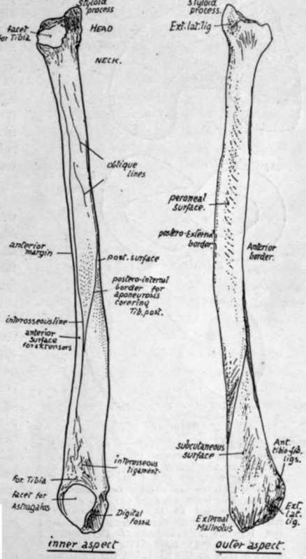

Fibula
Description
This section is from the book "The Anatomy Of The Human Skeleton", by J. Ernest Frazer. Also available from Amazon: The anatomy of the human skeleton.
Fibula
The upper end, or head, is enlarged, presenting an articular surface for the tibia, looking upwards, forwards, and inwards : behind and outside this a prominent styloid process, for attachment of external lateral ligament and Biceps : the whole mass is continuous below with the shaft at what is termed the neck.
Shaft is long and slender, with a sharp anterior margin running up its length : immediately internal to this is the narrow anterior surface, for the extensor muscles, bounded by the interosseous or inner border: the flexor surface lies behind this and comprises the inner and the posterior surfaces, which are separated to a great extent by the poster o-internal border that runs into the interosseous line in the lower part of the shaft. The posterior surface lies between the postero-internal and the posteroexternal border, and is for F. longus hallucis and, in its upper third, for Soleus, while Tibialis posticus lies between the posterointernal and interosseous borders : between the postero-external and the anterior edges is the external surface that gives origin to the peroneal muscles.
The lower end has a triangular subcutaneous surface externally, ending in the (outer) malleolus below, a longer projection than the malleolus of the tibia : this has a triangular articular face internally for the astragalus, and a deep digital fossa behind this for the posterior part of the external lateral ligament : above the articular surface is a small facet for the tibia, and above this again is a rough ligamentous area for the lower interosseous ligament, from the upper and front part of which the interosseous border is continued up on the shaft.
The external or peroneal surface, traced down, leads to a broad groove on the back of the lower end, showing where the Peronei pass behind the ankle : Peroneus longus arises from the upper half of the outer surface, and P. brevis from the lower half.
The two bones are held together by an interosseous membrane, of which the fibres are mainly directed downwards and outwards and are very short below : here it is continuous with the interosseous ligament, consisting of several groups of fibres with fatty tissue intervening, which causes the roughened areas into which the interosseous borders are continued on the lower parts of both bones.
There are also upper and lower tibio-fibular ligaments on the upper and lower joints : these again can be divided into anterior and posterior, and in all there is the same general direction, downwards and outwards. The lower ligaments are the strongest, and the upper anterior is stronger than the posterior. The upper joint has a weak capsule above, often perforated for a connection between its cavity and the bursa round Popliteus tendon : it has an indefinite oblique band below, directed downwards and inwards. The lower joint cavity is only a very short prolongation of synovial membrane of the ankle, and there is frequently no articular cartilage on the contiguous surfaces of the bones : the lower fibres of its posterior ligament come down below the level of the tibia (transverse lig.) and will be considered with the ankle joint (p. 174).
Fig. 129.-Right fibula. Inner and outer views. The bone as a whole is usually slightly concave forward, and this, with the recognition of parts at the lower end, will enable the student to place the bone on its proper side.
Fastened in this way there is still a very slight amount of movement possible between the bones, but it is so small that it may be practically disregarded and the fibula looked on as securely attached to the tibia, not carrying any weight, but completing and strengthening the articular surface of the ankle on the outer side, and affording, with the tibia and membrane, a firm ground for the origin of muscles.
The fibula is excluded from the cavity of the knee, although the outer ligaments of this joint reach it : the upper end of the tibia carries the femur and fibro-cartilages, has synovial and articular relations, and directly transmits the weight from the femur.
The knee joint is a hinge joint, in which, however, there is possible a certain small amount of rotation during flexion, and exists between femur, patella, and tibia. There is a single cavity between femur and patella, carried back as two condylar cavities under each condyle between femur and tibia. The condyles rest partly on rings of fibro-cartilage, the semilunar cartilages, between them and the tibia, to which the rings are fastened, and there are strong crucial ligaments connecting femur and tibia and placed between the two condylar cavities : these condylar cavities pass back on each side of the crucial ligaments, and turn up behind the condyles to reach the bone just above the articular surfaces. The whole is surrounded by ligamentous coverings.
The upper articular aspect of the tibia naturally corresponds with the lower surface of the femur-that is, there are two surfaces on which the condyles rest, with an intervening crest for ligamentous attachments, and the inner surface is longer and rather narrower than the outer, as is the case in the femoral condyles. The semilunar fibro-cartilages which are interposed between the bones also exhibit corresponding differences, for the inner one forms a more oval figure than the outer (Fig. 130).
Continue to:
- prev: Tibia And Fibula
- Table of Contents
- next: Fibula. Part 2